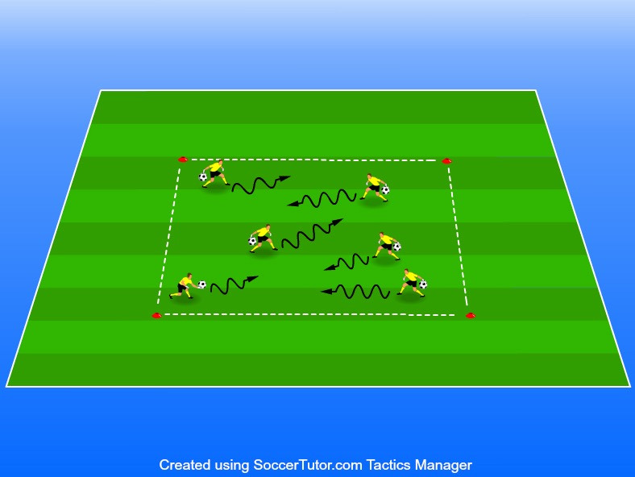

Få kontroll på hur man kastar, studsar, rullar samt tar upp bollen. Utvecklar även koordination och timing.
7–9 år
Yta 20x20 (anpassad efter hur
1-X spelare (Alla kan vara med
1 boll/spelare
8-12 koner beroende på hur
Fokus här är att samtliga spelare ska få kontroll det är bara att anpassa ytan) på bollen även med deras händer. Fungerar som en uppvärmning • 1 boll/spelare speciellt om man har fokus på målvakter och avslut. • 8-12 koner beroende på hur stort område det är 2. Spelarna springer runt i kvadraten med varsin boll och utövar flera olika varianter av rörelse som ni ledare instruerar
De kan studsa bollen medans de löper runt
De kan rulla bollen på marken och sedan måste de plocka upp den innan den har stannat
De kan släppa bollen från händer, sparka upp den i luften och fånga den efter
De kan byta boll med en annan spelare i kvadraten genom att studsa, rulla eller kasta till varandra
Finns massor med fler variationer men dessa är bra att utgå ifrån då det är de mest naturliga och matchlika rörelserna.
Räcker att hålla på runt 60-90 sekunder per variation så att de inte tröttnar